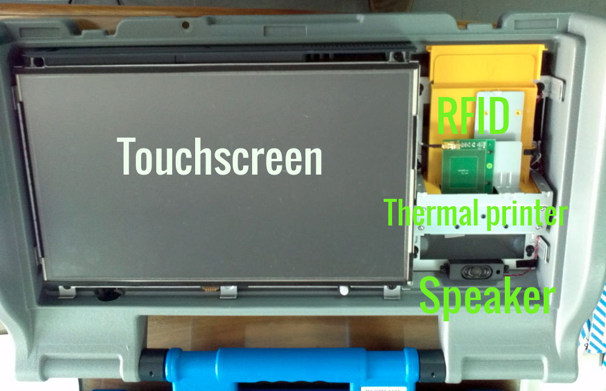
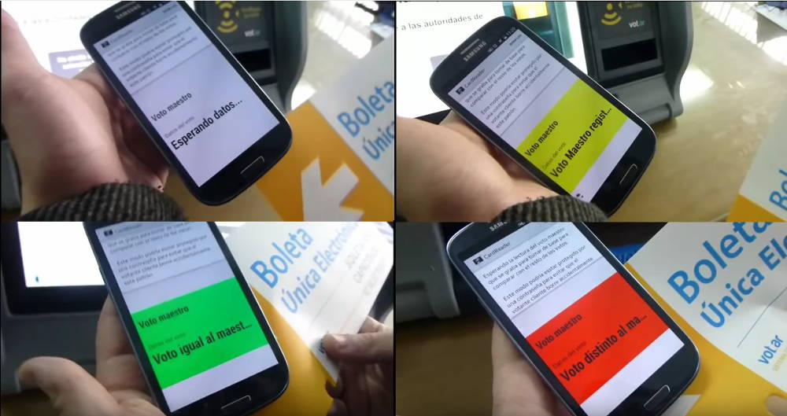

Vot.Ar: una mala elección
Presentación sobre el sistema Vot.Ar (o BUE), su HW, SW y Vulnerabilidades.
Y también, un poco sobre voto electrónico.
¿Cómo lo hicimos?
- Cerca de una semana de trabajo.
- No oficial: ninguna asistencia fue proporcionada por la empresa ni el gob.
- Yendo a puntos de consulta públicos para tener acceso a máquinas y boletas.
- Construyendo algunos dispositivos:
- lector de boletas
- quemador de boletas
- RFID jammer
- Mucha investigación en internet (gracias al código fuente y fotos filtradas)
- Gran esfuerzo
Vot.Ar o BUE (Boleta Única Electrónica), hecho por el Grupo MSA, es un sistema de voto electrónico que cuenta con dos elementos principales:
- La máquina emisora/contadora de votos
- La boleta
¿Su vulnerabilidad más evidente?
entre otras...


Requerimientos de Vot.Ar (según su patente y la Ley)
- Universal*
- Igual*
- Secreto*
- Obligatorio*
- Libre
- Un voto por elector
* Derechos Constitucionales
Cosas a tener en cuenta respecto de Vot.Ar
- HW y SW completamente cerrado (black box).
- Absolutamente nada de documentación pública: ¡así y todo los creadores dicen que es código abierto!
- Más de 7 años de desarrollo:
- Usado en Salta (y auditado allí)
- Recientemente usado en las capitales de Chaco y Neuquén
- 2 auditorias oficiales al momento del informe (junio/julio 2015):
- Prof. Righetti, FCEN, UBA: OAT 03/15
Conclusión: algunos inconvenientes, pero ok. - Departamento de Informática, ITBA: DVT 56-504
Conclusión: inconcluyente, recomendaciones dadas.
- Prof. Righetti, FCEN, UBA: OAT 03/15
- ¡Una grave falla de seguridad deja al descubierto los certificados SSL empleados para asegurar la transmisión de resultados!
- Un programador independiente, Joaquín Sorianello, reporta esta falla a la empresa, solo para ser allanado por la policía dos días antes de los comicios y por la tarde/noche.
- Asimismo, hackeos independientes ocurren, provocando la fuga de datos personales de los técnicos de la empresa, motivo por el cual una Jueza decide bloquear el sitio justpaste.it donde residía esta información.


El sistema aquí reportado es tal cual fue usado en las elecciones de este año en la CABA
Visión general de Vot.Ar

Unidad portable, algo más grande que un maletín
Tiene a la izquierda:
- Pantalla táctil para operar
(elegir candidatos y demás)
Tiene a la derecha:
- Slot de boleta: un lector/escritor RFID + impresora térmica
Tiene arriba:
-
DVD R/W, LEDs de estado y puertos:
accesible por todos, bajo una pequeña tapa- USB *
- SVGA
- Ethernet
- Speaker
* BadUSB?...
Tiene por debajo:
- una fuente de alimentación + 2 packs de baterías
- y a veces, ¡un cable JTAG!
Luego está la boleta, que tiene un chip RFID + papel térmico al dorso.
También cuenta con un troquel en una esquina, para verificar que la boleta no haya sido intercambiada.
Enseguida los detalles...
Pero la propaganda decía:
¡Es una impresora, no una computadora!
¡y todos lo creyeron!
 Así que acá tuiteabamos, desde una "impresora"...
Así que acá tuiteabamos, desde una "impresora"...
Vistazo rápido: Abriendo la mesa
- La empresa provee de máquinas y de un grupo de técnicos.
- Los técnicos poseen credencial (chip RFID).
- La Autoridad Electoral provee el DVD en sobre lacrado junto a la credencial de Pte. de Mesa (c/ chip RFID) y datos de Log-in.
- Encender la máquina e insertar el DVD.
- Seguir las instrucciones para calibrar la pantalla táctil.
- Usar credencial de Presidente para abrir pantalla de inicio, ingresar # mesa y PIN.
- Seleccionar la opción de Apertura de Mesa, ingresar la información solicitada.
- Insertar boleta especial que se imprimirá con los nombres del Presidente y Fiscales, la hora de apertura y un código QR conteniendo esa misma info, que también se grabará en el chip.
Vistazo rápido: Votando
|
|
|
|
|
 3
3
|
|
 4
4
|
|
|
|
|
Vistazo rápido: Cerrando la mesa
Al término de la votación (18hs):
- Iniciar sesión como Presidente.
- Insertar la Boleta de Apertura de Mesa.
- Seleccionar la opción de Cierre de Mesa, ingresar la hora actual.
- Insertar boleta especial de Cierre que tendrá información similar a la de Apertura.
Vistazo rápido: Escrutinio
- Inmediatamente luego de cerrar la mesa, se activa el modo escrutinio.
- Elegir una boleta de la urna, verificar impresión y que no tenga marcas extrañas.
- Acercarla a la máquina para contabilizarla.
- Repetir para toda la urna.
- Al terminar, insertar boleta especial que será impresa con el resultado del escrutinio. Se pueden imprimir tantas como se necesiten.
- Ahora debe insertarse una Boleta de Transimisón de Escrutinio para continuar.
Vistazo rápido: Transmisión del escrutinio
- Conectar la máquina a la LAN.
- Insertar boleta especial.
- ¿¿¿???
No hemos podido obtener información respecto de este punto.
Durante nuestras pruebas, no logramos crear una boleta especial de transmisión, por lo que nunca pudimos completar este procedimiento.
Ahora veamos el HW en profundidad
¿Qué hay dentro de la máquina?
Más adentro (detrás de la pantalla):

- Puerto JTAG: se usa para programar/debuggear el microcontrolador. Acceso externo a través de un cable cerca de las baterías.
 ¡Algunas lo tenían durante las elecciones!
Threat level: high
¡Algunas lo tenían durante las elecciones!
Threat level: high
¡Puede usarse para reprogramar el uC!
Más sobre esto en el blog de Javier
- Microprocessor (uP): Intel(R) Celeron(R) CPU N2930 @ 1.83GHz
- RAM memory: 2GB DDR3 1600
- Microcontroller (uC): Atmel AT91SAM7X256
- Internal E2PROM memory: 256KB (!)
Así que, encontramos un subsistema desconocido:

El uC ARM controla la impresora térmica y el lector/escritor RFID.
Su memoria E2PROM interna es suficiente para almacenar
todos los votos emitidos y más.
No sabemos nada, Jon Snow!
Sobre las boletas (BUE)

- Papel grueso impreso en el frente y papel térmico + chip RFID en el dorso.
- Una delgada lámina metálica protege al chip de ser leído cuando la boleta se encuentra perfectamente doblada sobre sí misma.

El chip RFID
| Marca | Modelo | Memoria (Bytes) | Nota |
|---|---|---|---|
| NXP | ICODE SLI SL2ICS20 o SLIX SL2S2002 (ISO 15693) | 112 | código ID único |
| Categorías de Tag | ||
|---|---|---|
| Tag Vacío 0x0000 | Voto 0x0001 | Técnico MSA 0x0002 |
| Presidente de Mesa 0x0003 | Escrutinio Finalizado 0x0004 | Apertura de Mesa 0x0005 |
| Demostración 0x0006 | Transmisión de Escrutinio 0x007F | |
| Tag Virgen 0x0007 (?) | Addendum 0x007F (?) | Tag desconocido 0xFFFF (?) |
Estructura de datos dentro del Tag
K1 T2 T1 L1 C4 C3 C2 C1 D1...Dn W1 W2 W3 W4
| Tipo | Desc | Tamaño (bytes) | Endianness | Guardado como | Valor fijo |
|---|---|---|---|---|---|
| K | Token | 1 | - | HEX | 0x1C |
| T | Categoría Tag | 2 | little-endian | HEX | - |
| L | Longitud de Datos | 1 | - | HEX | - |
| C | CRC32(Datos) | 4 | little-endian | HEX | - |
| D | Datos | n | - | ASCII | - |
| W | Write test? | 4 | - | ASCII | W_OK |
Más info sobre el chip y cómo se almacenan datos: ver punto IV. B del informe
Momento de analizar el SW
Pudimos hacerlo gracias a alguien llamado Prometheus, que publicó el código fuente.
- Escrito en Python.
- Se emplea un live-dvd:
- Linux Ubuntu-based (un poco recortado).
- El contenido/archivo de hashes no está firmado criptográficamente (el DVD puede ser reemplazado sin más).
- No se implementa UEFI/SecureBoot.
- El programa se ejecuta como root.
- Credenciales de Log-in se hardcodean en archivo .json.
- Carece completamente de documentación (pública) y de documentación en el código.
- Muy pocos comentarios, incluso desacertados.
- Código desprolijo.
- Sin pruebas unitarias.
Esto hace que el código sea difícil de leer, auditar, mantener, mejorar...
...pero es ideal para gestar bugs desagradables...
...tales como #multivoto y otros...
Inyección de Comandos
Alfredo Ortega encontró una vulnerabilidad de inyección de comandos en la rutina de generador de códigos QR.
- msa/core/clases.py, línea 190:
a_qr_str()devuelve una lista de valores separados por comas. - msa/core/clases.py, línea 206:
a_qr()envía esos valores a la función vulnerable. - msa/core/qr.py, línea 13:
crear_qr()función vulnerable, ejecuta el comando sin sanitizar.
Esta rutina se ejecuta para imprimir el QR de los nombres del Presidente de Mesa y Fiscales.
- Nombre:
Juan
- Apellido:
Perez;echo 'this is bad!'
La pantalla de ingreso de nombres sí sanitiza y tiene un límite de longitud, por lo que explotar esta vulnerabilidad es complicado.
Threat level: medium
Multivoto
Esta vulnerabilidad permite a un atacante añadir varios votos al chip RFID, tantos como soporte la memoria del chip (cerca de 10~12 votos).
No es obligatorio distribuir los votos de forma especial: pueden ser para un único candidato, o divirse entre varios candidatos, en la misma categoría u otra.
Threat level: critical (CVE-2015-6839)
No es posible diferenciar entre una boleta multivoto y una normal a simple vista.
Así que, un atacante con acceso a una impresora térmica y boletas (no es muy difícil de conseguir) podría emitir votos de antemano que son muy difíciles de detectar.
Fue reconocido por la auditoría del Prof. Righetti en su última publicación (pero disminuido de importancia).
Multivotar es fácil, solo hay que construir el string de voto
Este sería un voto normal para “Diputado” (DIP), “Jefe de Gobierno” (JEF) y “Jefe Comunal” (COM) para la CABA: 06CABA.1COM567DIP432JEF123.
Y este sería el string de multivoto: 06CABA.1JEF123JEF123JEF123COM567DIP432 donde el Jefe de Gobierno obtuvo tres votos y el resto de las categorías, uno.
Ver punto IV. B. 1 y Apéndice B. C del informe
Por ejemplo, es factible conseguir algo de info online, en la página de la autoridad electoral:


Salteando pantalla de inicio de sesión
Suplantar al Técnico o Presidente de Mesa
Esto es trivial dado que ninguna autenticación es usada para con los datos del chip.
Obtener algunos chips RFID y:
- Crear una boleta falsa de Apertura de Mesa.
- Crear una boleta de Presidente de Mesa.
- Crear una boleta de Técnico.
Ahora con la boleta de Técnico...
 ...ingresar al modo mantenimiento
...ingresar al modo mantenimiento
Threat level: high
Permite eyectar el DVD y algunos DoS. Otra evidencia de un mal diseño...


BUE significa Boleta Única Electrónica y BUP, Boleta Única de Papel
| BUE | BUP |
|---|---|
| Ambos: mejor que el sistema tracional (francés) | |
| ~U$D 9 por voto | ~U$D 2 por voto |
| 1.84Kg de baterías por máquina * 9k máquinas = 16.5Tn! | No requiere baterías |
| Boletas de difícil reciclaje | Facilmente reciblable |
| 1 DVD por máquina... ¿qué hacemos con ellos? ¿Posavasos? | No se necesitan DVDs |
| Escrutinio provisorio más rapido que manual (~30%) | Escrutinio provisorio manual, pero podría automatizarse |
| Es voto electrónico | No es voto electrónico |
Viejas amenazas actualizadas
Algunos ataques comunes a los sistemas electorales
- Urna embarazada
- El presi-militante
- Voto calesita (cadena)
- Clientelismo
- Robo de boletas
- La tapadita
- El factor cartero
Explicación mucho más detallada por Javier
No hay mayor ventaja de uno u otro sistema en ningún punto.
(entonces, ¿sin mejoras respecto de un simple papel?)
Y sin embargo, este sistema introduce una nueva forma de comprar votos, que puede ser explotada por los punteros.
Es muy fácil ocultar un teléfono celular entre la ropa con una aplicación para leer el contenido del chip:
Resumiendo...
- Malas técnicas de programación derivaron en vulnerabilidades.
- Pésima elección del sistema de soporte/almacenamiento de votos.
- No satisface los requerimientos:
- Viola el secreto del voto.
- Más de un voto por elector.
- Es oscuro para el votante (y para todos).
- No se tienen ventajas significativas respecto del sistema de Boleta Única de Papel.
Como la Suprema Corte de Alemania dictaminó, de acuerdo a su Constitución:
Cuando se utilizan máquinas de voto electrónico, debe ser posible para el ciudadano verificar los pasos escenciales del proceso electoral y verificar los resultados de forma fiable y sin ningún conocimiento especial de experticia.